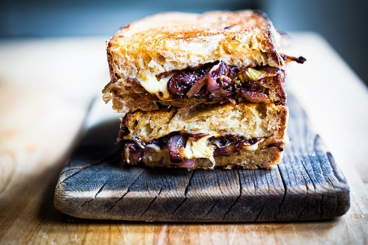

French Onion Sandwiches

Description
These are a classic vegetarian take of famous meal. This delicious sandwich is without any meat but rich in flavour. The french onion sandwich is wonderful when paired with potato salad or a side of vegetables. Onion haters beware.
Ingredients
- 4 Slices Sourdough Bread
- 1 Red Onion
- 2 Pieces of Swiss Cheese
- Butter
- Worcestershire Sauce
Steps
- Slice red onion into thin onion rings.
- Carmellize onions on a skillet with butter and a small amount of cooking oil.
- While onions are cooking spread butter on outsides of Sourdough bread as you would when making grilled cheese sandwiches. Prepare the breads for the onions by placing 1 slice of swiss cheese on the inside of each sandwich.
- Once onions are fully carmellized add two teaspoons of Worcestershire sauce and stir for 30 seconds.
- Add onions to sandwiches and grill the sandwiches on a seperate skillet, with the sides of the bread having butter on the outside of the sandwich.
- Grill on each side until crispy and golden, being sure not to allow the sandwich to either burn or stick.
- Serve and ENJOY!